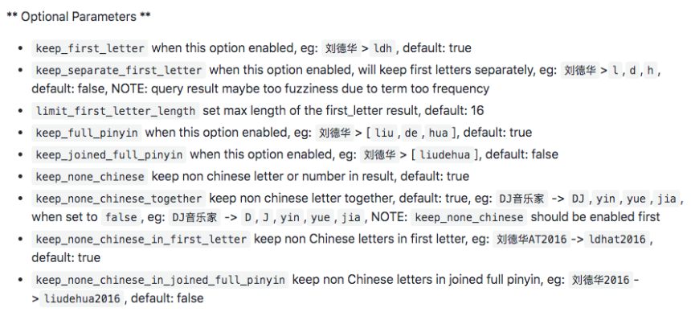

第五节 多语言及中文分词与检索
1、自然语言与查询Recall
- 当处理人类白然语言时，有些情况，尽管搜索和原文不完全匹配，但是希望搜到一些内容
Quick browrn fox和fast brown fox/Jumping fox和Jumped foxes
- 一些可采取的优化
- 归一化调元清除变音符号如
rôle的时候也会匹配role - 抽取词根：清除单复数和时态的差异
- 包含同义词
- 拼写错误：拼写错误或者同音异形调
- 归一化调元清除变音符号如
2、混合多语言的挑战
- 一些具体的多语言场景
- 不同的索引使用不同的语
- 同一个索引中，不同的字段使用不同的语言
- 一个文档的一个字段内混合不同的语言
- 混合语言存在的一些挑战
- 词干提取：以色列文档，包含了希伯来语，阿拉伯语，俄语和英文
- 不正确的文档频率——英文为主的文章中，德文算分高（稀有）
- 需要判断用户搜索时使用的语言语言识别（Compact Language Detector)
- 例如根据语言查询不同的索引
3、分词的挑战
- 英文分词：·You’re·分成一个还是多个？
Half-baked - 中文分词
- 分词标准：哈工大标准中姓和名分开。
HanLP是在一起的。具体情况需制定不同的标准 - 歧义（组合型歧义，交集型歧义，真歧义）
- 中华人民共和国／美国会通过对台售武法案／上海仁和服装厂
- 分词标准：哈工大标准中姓和名分开。
4、中文分词方法的演变——字典法
- 查字典最容易想到的分词方法（北京航空大学的梁南元教授提出）
- 一个句子从左到右扫描一遍。遇到有的调就标示出来。找到复合词，就找最长的
- 不认识的字串就分割成单字词
- 最小词数的分词理论——哈工大王晓龙博士把查字典的方法理论化
- 一句话应该分成数量最少的词串
- 遇到二异性，无能为力（例如：“发展中国家厂”/ “上海大学城书店”）
- 用各种文化规则来解决二义性都并不成功
5、中文分词方法的演变——基于统计法的机器学习算法备
- 统计语言模型一1990年前后清华大学电子工程系郭进博士
- 解决了二义性问题将中文分词的错误率降低了一个数量级。概率问题动态规划+利用维特比算 法决速找到最佳分调
- 基于统计的机器学习算法
- 这类目前常用的是算法是
HMM, CRF, SVM,深度学习等算法。比如Hanlp分词工具是基于CRF算法以CRF为例，基本思路是对汉宇进行标注训练，不仅考虑了调语出现的频率，还考虑上下文，具各转好的学习能力，因此真对歧义调和未登录词的识别都具有良好的效果． - 随着深度学习的兴起，也出现了基于神经网络的分调器有人尝试使用双向
LSTM+CRF实现分调器，其本质上是序列标注，据报道其分词器字符准确率可高达97.5%
- 这类目前常用的是算法是
6、中文分词器现状
- 中文分词器以统计语言模型为基础，经过几十年的发展，今天基本已经可以看作是一个已经解决的问题
- 不同分词器的好坏主要的差别在于数据的使用和工程使用的精度
- 常见的分词器都是使用机器学习算法和词典相结合，一方面能够提高分词准确率，另一方面能够改善领域适应性
7、一些中文分词器
- HanLP一面向生产环境的自然语言处理工具包
- http://hanlp.com/
- https://github.com/KennFalcon/elasticsearch-analysis-hanlp
- IK分词器
- https://github.com/medcl/elasticsearch-analysis-ik
8、HanLP Analysis
- HanLP
./elasticsearch-plugin install https://github.com/KennFalcon/elasticsearch-analysis-hanlp/releases/download/v7.9.1/elasticsearch-analysis-hanlp-7.9.1.zip

9、IK Analysis
Pinyin
./elasticsearch-plugin install https://github.com/medcl/elasticsearch-analysis-pinyin/releases/download/v7.9.1/elasticsearch-analysis-pinyin-7.9.1.zip

10、中⽂文分词 Demo
- 使⽤用不不同的分词器器测试效果
- 索引时，尽量量切分的短，查询的时候，尽量量⽤用⻓长的词
- 拼⾳音分词器器
#stop word
DELETE my_index
PUT /my_index/_doc/1
{ "title": "I'm happy for this fox" }
PUT /my_index/_doc/2
{ "title": "I'm not happy about my fox problem"}
POST my_index/_search
{
"query": {
"match": {
"title": "not happy fox"
}
}
}
Output
"max_score" : 0.9902718,
"hits" : [
{
"_index" : "my_index",
"_type" : "_doc",
"_id" : "2",
"_score" : 0.9902718,
"_source" : {
"title" : "I'm not happy about my fox problem"
}
},
{
"_index" : "my_index",
"_type" : "_doc",
"_id" : "1",
"_score" : 0.39132434,
"_source" : {
"title" : "I'm happy for this fox"
}
}
]
虽然通过使用 english （英语）分析器，使得匹配规则更加宽松，我们也因此提高了召回率，但却降低了精准匹配文档的能力。为了获得两方面的优势，我们可以使用multifields（多字段）对 title 字段建立两次索引： 一次使用 english（英语）分析器，另一次使用 standard（标准）分析器:
PUT /my_index
{
"mappings": {
"blog": {
"properties": {
"title": {
"type": "string",
"analyzer": "english"
}
}
}
}
}
Error :
"caused_by" : {
"type" : "mapper_parsing_exception",
"reason" : "Root mapping definition has unsupported parameters: [blog : {properties={title={analyzer=english, type=string}}}]"
}
},
"status" : 400
- 去掉
mappings下面的blog，在put时已指定my_index "type": "string",没有这个类型
PUT /my_index
{
"mappings": {
"properties": {
"title": {
"type": "text",
"fields": {
"english": {
"type": "text",
"analyzer": "english"
}
}
}
}
}
}
PUT /my_index/_doc/1
{ "title": "I'm happy for this fox" }
PUT /my_index/_doc/2
{ "title": "I'm not happy about my fox problem" }
GET /my_index/_search
{
"query": {
"multi_match": {
"type": "most_fields",
"query": "not happy foxes",
"fields": [ "title", "title.english" ]
}
}
}
Output
"max_score" : 1.1404738,
"hits" : [
{
"_index" : "my_index",
"_type" : "_doc",
"_id" : "2",
"_score" : 1.1404738,
"_source" : {
"title" : "I'm not happy about my fox problem"
}
},
{
"_index" : "my_index",
"_type" : "_doc",
"_id" : "1",
"_score" : 0.6178806,
"_source" : {
"title" : "I'm happy for this fox"
}
}
]
安装插件
docker exec -it es7_01 bash
docker exec -it es7_02 bash
bin/elasticsearch-plugin install https://github.com/KennFalcon/elasticsearch-analysis-hanlp/releases/download/v7.9.1/elasticsearch-analysis-hanlp-7.9.1.zip
bin/elasticsearch-plugin install https://github.com/medcl/elasticsearch-analysis-pinyin/releases/download/v7.9.1/elasticsearch-analysis-pinyin-7.9.1.zip
bin/elasticsearch-plugin list
analysis-pinyin
docker restart es7_01
docker restart es7_02
http://192.168.33.12:9200/_cat/plugins
es79 analysis-icu 7.9.1
es79 analysis-pinyin 7.9.1
es7_02 analysis-icu 7.9.1
es7_02 analysis-ik 7.9.1
es7_02 analysis-pinyin 7.9.1
#ik_max_word
#ik_smart
#hanlp: hanlp默认分词
#hanlp_standard: 标准分词
#hanlp_index: 索引分词
#hanlp_nlp: NLP分词
#hanlp_n_short: N-最短路分词
#hanlp_dijkstra: 最短路分词
#hanlp_crf: CRF分词（在hanlp 1.6.6已开始废弃）
#hanlp_speed: 极速词典分词
POST _analyze
{
"analyzer": "hanlp_standard",
"text": ["剑桥分析公司多位高管对卧底记者说，他们确保了唐纳德·特朗普在总统大选中获胜"]
}
#Pinyin
PUT /artists/
{
"settings" : {
"analysis" : {
"analyzer" : {
"user_name_analyzer" : {
"tokenizer" : "whitespace",
"filter" : "pinyin_first_letter_and_full_pinyin_filter"
}
},
"filter" : {
"pinyin_first_letter_and_full_pinyin_filter" : {
"type" : "pinyin",
"keep_first_letter" : true,
"keep_full_pinyin" : false,
"keep_none_chinese" : true,
"keep_original" : false,
"limit_first_letter_length" : 16,
"lowercase" : true,
"trim_whitespace" : true,
"keep_none_chinese_in_first_letter" : true
}
}
}
}
}
GET /artists/_analyze
{
"text": ["刘德华 张学友 郭富城 黎明 四大天王"],
"analyzer": "user_name_analyzer"
}
Output :
{
"tokens" : [
{
"token" : "ldh",
"start_offset" : 0,
"end_offset" : 3,
"type" : "word",
"position" : 0
},
{
"token" : "zxy",
"start_offset" : 4,
"end_offset" : 7,
"type" : "word",
"position" : 1
},
{
"token" : "gfc",
"start_offset" : 8,
"end_offset" : 11,
"type" : "word",
"position" : 2
},
{
"token" : "lm",
"start_offset" : 12,
"end_offset" : 14,
"type" : "word",
"position" : 3
},
{
"token" : "sdtw",
"start_offset" : 15,
"end_offset" : 19,
"type" : "word",
"position" : 4
}
]
}
11、相关资源
- Elasticsearch IK分词插件 https://github.com/medcl/elasticsearch-analysis-ik/releases
- Elasticsearch hanlp 分词插件 https://github.com/KennFalcon/elasticsearch-analysis-hanlp
- 分词算法综述 https://zhuanlan.zhihu.com/p/50444885